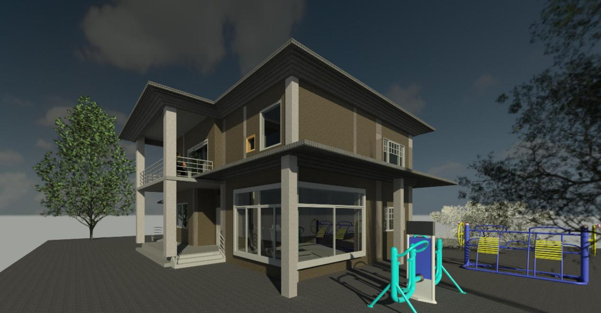

“江南水乡别墅”是我的设计作品，通过简单的双层房屋表达他对于中国三口之家的生活理念的设计
"Jiangnan Watertown Villa" designed by Chen Yifei, expresses his design for the life concept of a traditional Chinese family of three through a simple double-layer house
主要设计理念
- ·一楼健身房设计两面大飘窗，将自然与健身理念融为一体。
The gymnasium on the first floor is designed with large floating windows on both sides, integrating the concept of nature and fitness.
- ·二楼阳台也能是一楼入户的顶棚，遮风挡雨不用愁。
The balcony on the second floor can also be the ceiling of the first floor, so you can protect yourself from the wind and rain.
- ·斜屋顶设计排水沟槽，及时排水。
The inclined roof is designed with drainage ditch to drain water in time.
- ·车库直通室内，方便好用。
The garage is directly connected to the room, which is convenient for use.
- ·一二楼动静分离：起居二楼，活动一楼，互不打扰。
Dynamic and static separation on the first and second floors: living on the second floor, activities on the first floor, do not disturb each other.
这是“单元住宅设计图”，为一层为店面，二三四层为单元式住宅的四层小屋。设计表达了对当代城市建筑建筑将店面与住宅融合，把商业与居住融为一体的理念。
This is the "design drawing of unit residence". The first floor is the storefront, and the second, third and fourth floors are the four storey house of unit residence. The design expresses the concept of integrating commerce and residence in contemporary urban architecture.
主要设计思路
- ·将商业与居住结合，充分利用建筑物各部分。
Combine commerce with residence and make full use of all parts of the building.
- ·阳台圆弧设计，增加美观。
The arc design of the balcony increases the beauty
- ·双阳台设计，可做生活或景观阳台。
Double balcony design

这是我利用BIM土建计算软件和BIM造价软件完成的北京市郊某建筑物的计算工作。我按照图纸建模并计算土方，基础，梁板柱墙楼梯等建筑部分的工程量，并计算了它的总造价。
This is the calculation of a building in the suburb of Beijing that I completed using BIM civil engineering calculation software and BIM cost software. I modeled and calculated the quantities of earthwork, foundation, beam, slab, column, wall, stair and other building parts according to the drawings, and calculated its total cost.
计算难点
- ·楼板中存在平板，有梁板，阳台板等不同类型楼板，要分开计算。
The slab, beam slab, balcony slab and other types of slabs shall be calculated separately.
- ·柱子中存在马牙槎
There are Complex structures in the columns
- ·既有满堂基础也有独立基础。
There are both full hall foundations and independent foundations.

双层咖啡馆是我与景观设计的同学一起设计的咖啡馆方案，我主要负责建筑上的可行性与内部空间的安排。
The double deck coffee shop is a coffee shop plan designed by me and my landscape design classmates. I am mainly responsible for the architectural feasibility and internal space arrangement.
主要特点 featuring in
- ·拱形吧台门 Arch bar door
- ·特色吊顶设计 Characteristic ceiling
- ·工作台与吧台相结合
Combination of workbench and bar
- ·灰色砖材突出高级感 Grey brick
- ·功能分区明确 Clear functional zoning
荔波民宿的设计思路来源于中国西部山区独特的地形。为了满足在山区建设景观的建筑物，我参与房屋图纸cad的设计。我将客房集中面对视野开阔的那一侧，将面山壁的那一侧设置为走道，解决了山坡影响视野的问题。因为山势起伏，因此每一层走道有三个不同的标高，并将三个走道用楼梯连接。
The design idea of Libo homestay comes from the unique terrain in the mountains of western China . In order to meet the requirements of building landscape in mountain areas, i participated in the design of house drawing cad. I concentrated the guest rooms on the side facing the wide view, and set the side facing the mountain wall as the walkway, which solved the problem that the hillside affected the view. Because of the ups and downs of the mountain, each floor of the walkway has three different elevations, and the three walkways are connected by stairs.